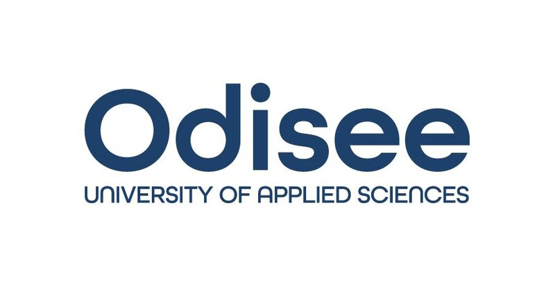

Mijn leven als IT-Student
Wie ben ik?
- Naam: Joppe Lenaerts
- Leeftijd: 20 jaar
- Klas: 2TI02
- Woont in: Brussel
Wat voor opleiding doe ik?
Op dit moment studeer ik Toegepaste Informatica in Brussel op het Odisee.
- Ik heb verschillende vakken op dit moment zoals:
- Data Analytics: Het analyseren van data binnen in een bedrijf
- Professional Development: Het richten op verschillende programma functies in een bedrijf.
niet alleen het coderen is belangrijk!
- Software Engineering Fundamentals: Alle fundamentele informatie over Software in een
bedrijf.
- System Management & Security Linux: Alles over de Operating System van Linux.
Wat voor hobbies?
Doorheen mijn leven heb ik een heel wat hobbies geleerd en ben nog bezig met een paar!
- Welke hobbies?
- Muziek maken - 11+ jaar
- Ik gebruik Ableton live 10 suite hiervoor. Het kwam uit in 2017.
- Video editing - 7+ Jaar
- Videografie & Fotografie - 5+ Jaar
- Hier heb ik een diploma voor gehaald op Atlascollege in Genk
- 3D Rendering - 2+ Jaar
- Art - 4+ Jaar
- Content Creation - 6+ Jaar
Een belangrijke quote
Ik heb al jaren ervaring met content creation. Ik heb verschillende connecties opgebouwd doorheen
de jaren
waardoor ik wel vaker aan YouTubers advies geef over Editing. De meest gestelde vraag
is:
"Hoe maak je van iets saai, iets leuk/interessant op te kijken?"
Het is echter enorm simpel. Als je video's maakt moet je je niet gaan richten op wat een andere
kijker leuk vind. Zorg eerst dat je je eigen video zelf leuk zou vinden en daarop kunnen andere mensen het vinden
en leuk vinden. Je hebt liever mensen die je eigen stijl leuker vinden dan dat je je moet gaan richten op wat hun
leuk vinden in plaats van wat jij leuk vind.
"Be your own target audience." - Joppe Lenaerts